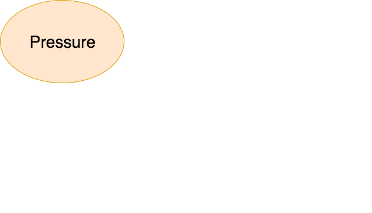
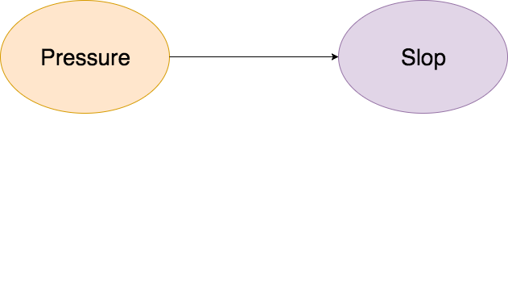
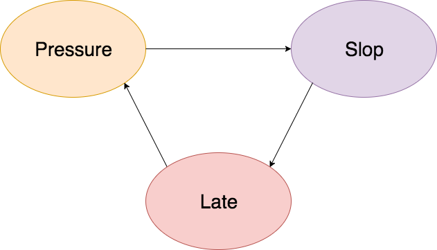
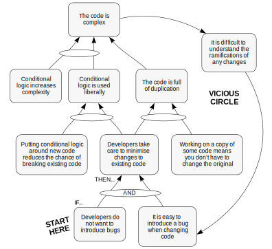
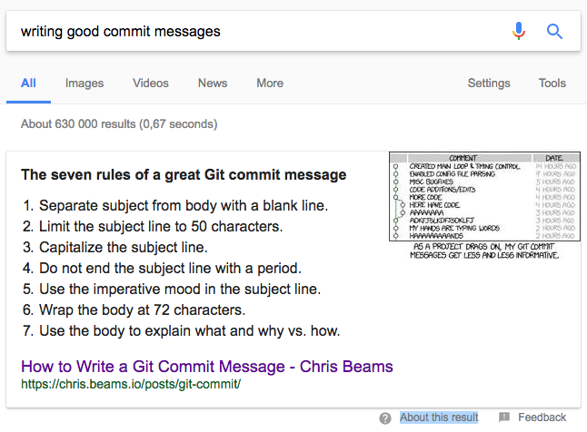

# Culture of code quality
There are at least two developers on every software project
You, and you in 6 months time
- What is code quality? - Sustaining code quality - Good commit messages
# What is code quality?
Pull requests/Code reviews factor in each of these phases, so I won't list it each time
## Is this _necessary_ code? - Discussions IRL - Slack(?) messages
## Is this good code? - Linting - Cyclomatic complexity - Code climate?
## Will its story live on? - Names of functions and variables - Names of files and folders - Comments - Commit messages - Branch names
# Sustaining code quality
Bad code comes from

Bad code comes from

Bad code comes from


Good commit messages

### We often write messages like: ```text f397a2a6f fixed some bug 86ba74ccb Added some functionality. 3bfab83d1 more fixes for a thing that needed fixing. Couldnt get things working, so needed to write some code to get things working. ```
### If commits were about things you did ```text f397a2a6f Went to get coffee 86ba74ccb started feeling kinda thirsty a14681be1 Ate a donut f2ff57049 Overslept this morning, made it for standup though ```
### Commits are not about you
### Commits are about code A properly formed Git commit subject line should always be able to complete the following sentence: --- If applied, this commit will _(your subject line here)_
## Bad - This commit will <span style="color:#E28473">_fixed bug with Y_</span> - This commit will <span style="color:#E28473">_changing behavior of X_</span> - This commit will <span style="color:#E28473">_more fixes for broken stuff_</span>
## Good - This commit will <span style="color:#68E468">_Add missing configuration_</span> - This commit will <span style="color:#68E468">_Refactor subsystem X for readability_</span> - This commit will <span style="color:#68E468">_Update the getting started guide_</span> - This commit will <span style="color:#68E468">_Remove deprecated methods_</span>
## References - [Bryan Helmkamp - Building a Culture of Code Quality](https://www.youtube.com/watch?v=IadcIkBeBuI) - [David Peterson - Why do teams fail to sustain code quality?](http://blog.davidpeterson.co.uk/2011/04/why-do-agile-projects-fail-so-often.html) - [Chris Beams - How to Write a Git Commit Message](https://chris.beams.io/posts/git-commit)
github.com/MuneebBaderoen/slideshows --- ### Questions ### Comments ### Rants